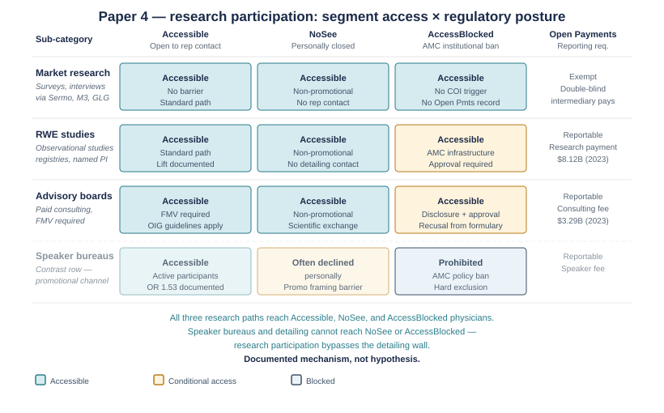
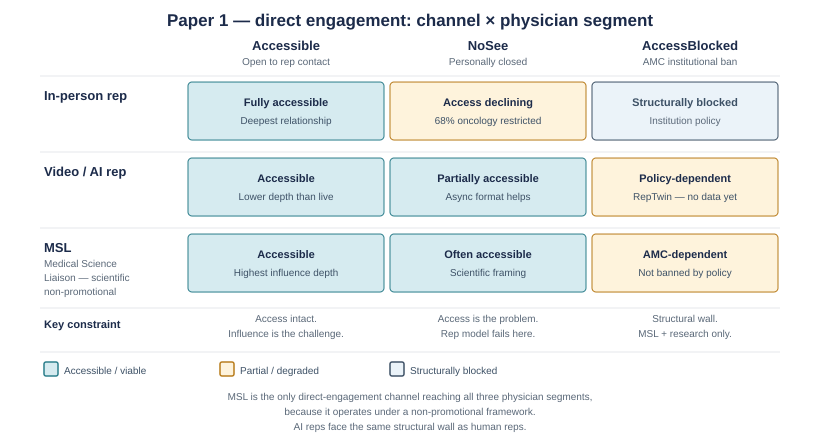
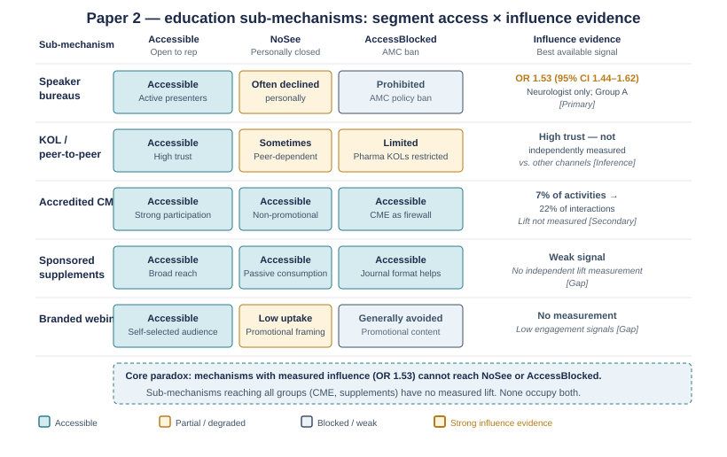
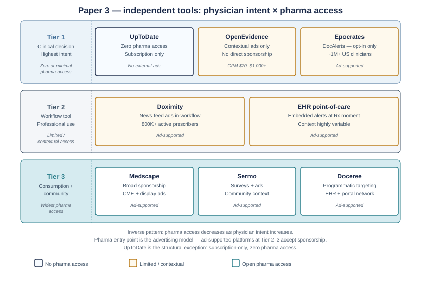

Reaching the Physician
What iPhysicianNet Tried, What Followed, and What Pharma Is Betting on Now
An industry history and current-state analysis of how pharmaceutical manufacturers reach the physicians who prescribe their products.
About This Research
- What this is.
- This document reconstructs the history of iPhysicianNet Inc.—a Scottsdale company that raised $80M between 1996 and 2003 to replace the in-person pharmaceutical sales call with live videoconferencing—and traces the two decades of commercial and technological experimentation that followed its collapse. It then maps the current landscape of AI-powered physician engagement tools, including both products pharma is deploying today and the independent AI clinical tools physicians are choosing for themselves.
- Why it was written.
- The author worked at iPhysicianNet and returned to the question it tried to solve — getting physicians to voluntarily engage with pharmaceutical product information — to document how the industry has approached it since. This is not an academic history; it is a working analysis of a problem that remains unsolved.
- Research approach.
- A single-pass deep research effort at roughly 50% depth. The research prioritized live web sources from 2023–2026 for the current AI landscape, and primary sources (SEC filings, Reuters Events trade press, archived local news) for the iPhysicianNet history specifically.
- Primary sources for iPhysicianNet.
- SEC S-1 (CIK 0001097673, February 4, 2000); Reuters Events/eyeforpharma press archive; U.S. 1 Newspaper (Princeton, NJ), September 3, 2003; Medtech Insight ROI analysis (paywalled).
- Confidence levels.
- iPhysicianNet specifics: high-confidence where S-1-sourced. Competitive history 2003–2019: medium-confidence. Current AI landscape (2025–2026): high-confidence for named products.
Contents
- Front matterAbout This Research
- Part IWhat iPhysicianNet Actually Built, and Why It Died
- Part IITwenty Years of Alternatives: What the Industry Tried, What Survived
- Part IIIWhat Pharma Is Betting on Now: The AI Layer (2023–2026)
- Part IVThe Physician: What the Data Actually Says About Access, Motivation, and AI
- AppendixSources and a Note About the Author
What iPhysicianNet Actually Built, and Why It Died
The Problem in 1996
In 1996, a pharmaceutical sales representative’s typical in-office visit lasted under two minutes, covered 1.6 products, and cost the manufacturer between $75–$125 per minute of physician attention. A well-prepared rep might make four to eight calls in a day. The physician had no control over timing, no ability to pause for detailed questions, and no mechanism to revisit content after the rep left.
iPhysicianNet’s answer: give the physician free use of a kiosk-mode PC, camera, and high-speed ISDN connection to the internet in exchange for one live video detailing session per month per pharma client. The ROI case was compelling on paper—and on several dimensions it held up.
| Dimension | Traditional Rep (1996) | iPhysicianNet |
|---|---|---|
| Interaction time | Under 2 minutes | 8.4 minutes (average session) |
| Products per call | 1.6 | 2.9 |
| Cost per minute | $75–$125 | $18 |
| Rep calls per day | 4–8 | 10–25 |
| After-hours access | Not possible | Yes — 70% of Aventis sessions outside office hours |
| Physician controls timing | No | Yes — scheduled on physician’s terms, not the rep’s |
Note: Figures from iPhysicianNet marketing materials cross-referenced against Credit Suisse First Boston benchmarks. Not independently validated. A 2001 industry analysis found video reps made 13 calls/day vs. 8 in-person, at $46 vs. $106 per meeting—directionally consistent.
No published peer-reviewed study has been located that specifically ties iPhysicianNet’s model to prescribing lift. The ROI figures cited are practitioner estimates from company marketing materials, not independently validated outcomes.
What iPhysicianNet Told Physicians
The S-1 codified the physician value proposition as:
“greater convenience, better control of time, access to multiple sources of healthcare information for improved patient care, and improved quality of life.” — iPhysicianNet S-1, filed with the SEC, February 4, 2000
Beyond the value proposition language, physicians received four concrete benefits in exchange for monthly participation:
Free Hardware
A kiosk-mode PC, digital camera, and high-speed ISDN connection—a meaningful commitment in an era when broadband cost thousands per installation. The PC arrived pre-configured with internet access, e-mail, electronic medical periodicals and clinical news, CME resources, and access to pharma medical-affairs departments. DrFirst’s Rcopia e-prescribing software was integrated in 2001. Physicians who used the platform also recall access to digital drug-reference content, including material consistent with the PDR, though this specific third-party arrangement has not been confirmed in surviving public documents. No upfront cost to the physician; the full bundle was absorbed by iPhysicianNet and recovered through pharma fees.
CME Credits
Electronic continuing medical education credits tied to monthly detailing sessions—converting a compliance obligation into a professional development opportunity. Meaningful differentiation in an era before online CME was ubiquitous.
Peer Mini-Symposia
Access to medical-affairs Q&A sessions and peer symposia—the forerunner of the KOL-sponsored webinar format that became standard after 2010. Gave physicians structured scientific exchange, not only commercial messaging.
Schedule Control
One session per month per pharma client, on the physician’s schedule. This behavioral insight—physicians will engage on their own terms, not the rep’s—is the core thesis every subsequent entrant has tried to replicate.
The one satisfaction figure in academic literature (~68% of participants rated iPhysicianNet superior to in-person detailing) has ambiguous attribution and may conflate iPhysicianNet with a competing product. No recorded physician testimonial survives in the public record that is specifically and credibly attributable to the platform.
“Providing this equipment and these services without charge may be considered by regulatory authorities or others to be improper inducements to participating physicians to prescribe pharmaceuticals.”
— SEC S-1, February 2000. This risk was flagged internally and never fully resolved. Every subsequent entrant that exchanges value with physicians for pharma access has had to answer the same question differently.
What Pharma’s Own Executives Said
Six pharma clients can be confirmed by name from primary sources. Their public statements are the clearest contemporaneous record of what the industry thought about the model—and, critically, what it was actually being used for.
| Company | Executive | Key Statement | What It Reveals |
|---|---|---|---|
| GlaxoSmithKlineFounding client; contract exit triggered shutdown | — | “to conduct virtual sales calls with physicians who refuse to see sales reps” | The most direct statement in the public record: no-see physician access was the primary use case, not replacing willing physicians. |
| Aventis Pharma | Michelle RungeVP, North American e-business | “By using multiple virtual detailing platforms… we provide physicians with relevant information at the right time.” 70% of sessions outside office hours; 60% of physicians requested samples post-session. | After-hours data validates the timing thesis. Physicians who engaged on their own schedule were also willing to request samples—a commercial outcome pharma cared about. |
| Wyeth-Ayerst | Bernard PoussotPresident | “Interactive electronic detailing helps address the growing information needs of our prescribing customers in a way most convenient for them.” | Physician-first framing—“convenient for them”—in a commercial press release. Notable at a time when pharma typically centered company-benefit language. |
| P&G Pharmaceuticals | Rick JuneVP / GM | “Physicians need clinically relevant information about our pharmaceutical therapies… We are very excited to team up with iPhysicianNet to creatively provide this information in an efficient, yet personalized manner.” | “Clinically relevant” is the same framing post-2020 research consistently identifies as what physicians most want from pharma contact. |
| Eli Lilly | — | Exited: “the size of our network was not large enough” | Named the chicken-and-egg problem precisely. A physician network needs scale before pharma will pay; scale requires pharma funding to build. |
| G.D. Searle / PharmaciaFounding client per the S-1 | — | No public quote located. | — |
The Funding, the S-1, and the Structure That Couldn’t Survive One Exit
iPhysicianNet raised $80.27M from venture investors, plus a strategic $2.5M from Professional Detailing Inc. (PDI)—an early signal that contract field-sales organizations recognized the model had commercial logic. Despite the backing, it never reached the public markets.
| Investor | Type |
|---|---|
| Veron International | VC |
| Far East Capital | VC |
| Cordova | VC |
| Lumira Capital | VC |
| SenMed Ventures | VC |
| Vivo Capital | VC |
| Cross Atlantic | VC |
| Patricof & Co. | VC |
| Cardinal Partners | VC |
| Professional Detailing Inc. (PDI) | Strategic ($2.5M) |
| S-1 Key Facts | |
|---|---|
| Filed | February 4, 2000 |
| Exchange | Nasdaq |
| Proposed ticker | IPNI |
| Banker | Lehman Brothers |
| Amount sought | $63.25M |
| Outcome | Withdrawn — dot-com window closed, mid-2000 |
| SEC CIK | 0001097673 |
The S-1 explicitly warned: “if we lose one or both of our current pharmaceutical company clients, our business would be substantially harmed.” That is exactly what happened.
| Date | Event |
|---|---|
| June 2003 | GSK notified iPhysicianNet of contract discontinuation. Moriarty shareholder letter (August 6, 2003): “totally unexpected, and devastating, news.” |
| Late June–July 2003 | Eli Lilly exited, citing network size. An unnamed investor offered $5M contingent on pharma partners agreeing to price increases. Pharma partners declined. |
| July 31 — 9:30 a.m. | Board deadline for bridge financing expired. |
| July 31 — 1:00 p.m. | Moriarty informed 115 Scottsdale staff their jobs were eliminated. Eight more cut in Princeton, NJ. “We were left with no funding and very little cash.” |
Peter Moriarty subsequently co-founded Prismic Pharmaceuticals (acquired by FSD Pharma / NASDAQ:HUGE, 2018–2019) and is currently COO of Klotho Neurosciences (NASDAQ:KLTO). No public retrospective interview on iPhysicianNet’s failure has been indexed to date.
What the Failure Actually Teaches
The iPhysicianNet model had four structural problems. Each one remains present in the market today in updated form.
Capital per physician was prohibitive
The cost of recruiting each physician—hardware, installation, ongoing ISDN connectivity—was absorbed before any revenue was secured. Today’s equivalent: acquiring physician attention at scale without paying in cash or hardware. OpenEvidence’s answer was to build something so clinically useful that physicians find it on their own.
Client concentration was fatal
Revenue from two or three pharma clients is not a platform—it is a contract-services relationship. A durable platform requires either a large number of smaller clients or a business model that survives the loss of any single one. The S-1 warned of exactly this risk. The warning proved accurate within three years.
The gray zone was never resolved
The hardware-for-sessions exchange was potentially an inducement to prescribe, and iPhysicianNet’s lawyers knew it. The OIG and PhRMA guidelines of the era were ambiguous. Post-Sunshine Act (2013), the ambiguity is different but equally present. The question every model since has had to answer: is this a marketing tool or a clinical tool, and who controls the content?
The physician value proposition was too thin
CME credits, peer symposia, drug-reference content, e-prescribing tools, and bundled internet access were meaningful in 1999. By 2002, physicians had broadband and could access clinical information, digital drug references, and CME without a three-year exclusive contract tied to pharma detailing. Every component of the value bundle eroded toward free and ubiquitous. The network stalled at a size insufficient for pharma to justify the cost. Value to the physician must be deep enough to survive the novelty period—and durable enough that it cannot be replicated elsewhere for free.
Twenty Years of Alternatives: What the Industry Tried, What Survived
Understanding what came after iPhysicianNet is essential context for understanding today’s landscape. The field evolved in three recognizable phases: a first wave of dot-com-era e-detailing startups that mostly failed or were absorbed (2000–2012); a CRM and platform era that defined the hybrid-engagement model now standard across the industry (2010–2020); and the current AI inflection (2023–present). Most of the companies below are solving the same underlying problem—getting pharma content to physicians who are increasingly unwilling to engage with it through traditional rep channels.
Phase 1 — Early E-Detailing (2000–2012): Same Thesis, Different Mechanics
Every company in this wave attacked the same problem iPhysicianNet had identified. The key structural difference from iPhysicianNet was the removal of physician hardware—each of these companies found ways to reach physicians using existing devices and workflows rather than funding hardware installation.
| Company | Period | What They Built | Outcome |
|---|---|---|---|
| RxCentric | 1999–2003 | Web portal: sponsored digital detailing and physician email marketing. Asynchronous—no live rep, no physician hardware. | Acquired by Allscripts 2003; merged into Physicians Interactive; brand discontinued. |
| Lathian SystemsOriginally MyDrugRep.com | 1999–2012 | Interactive Flash-based and KOL-video eDetails. Asynchronous, self-directed. Served most top-20 pharma at its peak. | Acquired by D&R Communications, February 2012; brand effectively disappeared. |
| Aptilon HoldingsTSXV:APZ, Montreal | Founded 2003 | Live “click-to-talk” video detailing using the physician’s own device—same live-rep model as iPhysicianNet, but with zero hardware capex. The closest functional analog to iPhysicianNet’s model with the capital-per-physician problem removed. | Sold multichannel detailing assets to Indegene 2012 (Indegene Aptilon). Residual entity renamed DMD Digital Health Connections 2014. |
| Physicians Interactive / Aptus Health⚠ Not Outcome Health — see note below | 2003–2019 | Multichannel HCP digital engagement. Began as Allscripts’ e-detailing unit post-RxCentric (2003). Acquired QuantiaMD and Univadis in 2015; rebranded Aptus Health in 2015. | Acquired by WebMD/Medscape 2019; now operates as part of the Medscape Professional Network. |
| ePocratesFounded 1998; IPO 2011 | 1998–present | Pharma-sponsored “DocAlerts” delivered at the moment of clinical decision-making within a drug-reference mobile app. Point-of-care ambient messaging rather than live or asynchronous detailing. | Acquired by athenahealth, March 2013, ~$293M. Major HCP digital advertising channel today. New GM (David Arkin, February 2024); AI layer in development. |
Physicians Interactive / Aptus Health is a separate entity from Outcome Health. Outcome Health (founded 2010 as ContextMedia) was a point-of-care waiting-room screen network that collapsed under a fraud scandal beginning in 2017. The two companies operated in different segments, served different physician touchpoints, and had entirely different failure modes.
Every company in Phase 1 that removed the hardware giveaway survived longer than iPhysicianNet. Every company that went asynchronous had lower unit economics but less client concentration risk. None of them solved the physician motivation problem—they worked around it by making content available without requiring the physician to consent in advance. The consent problem was deferred, not resolved.
Phase 2 — The CRM and Platform Era (2010–2020): Hybrid Wins
The companies that defined 2010–2020 shared one structural insight Phase 1 missed: physician attention follows physician value, not pharma dollars. Veeva built CRM infrastructure that made the existing rep more productive. Doximity gave physicians a network they genuinely wanted, then let pharma advertise into that attention. OptimizeRx embedded pharma content directly into the clinical workflow. The platform economics that resulted were structurally different from the per-session pharma contracts that had killed iPhysicianNet.
| Company | What They Built | Scale / Key Metric |
|---|---|---|
| Veeva SystemsFounded 2007 | Vault CRM + Engage Meeting module: live rep video detailing integrated into the rep’s existing CRM workflow. Zero physician hardware—physician uses any browser. Compliant content library and MLR workflow integrated. Offered Engage Meeting free through December 2020; Boehringer Ingelheim ran 1M+ virtual meetings on the platform in 12 months. | FY2027 revenue guidance: $3.585–$3.60B. De-facto industry standard for rep-mediated video detailing. |
| DoximityFounded 2010; NYSE:DOCS IPO 2021 | Physician social and professional network covering >80% of licensed U.S. physicians. No physician cost—value is peer communication, HIPAA-compliant e-fax, telemedicine tools, and job search. Pharma advertises into physician attention already present on the platform. Bank of America upgraded the stock in 2025, citing FDA pressure on DTC advertising pushing pharma budgets toward HCP-targeted digital. | FY2025 revenue ~$570M (+20% YoY). FY2026 guidance: $619–631M. ~95% from pharma subscriptions. |
| OptimizeRxNASDAQ:OPRX; founded ~2006 | In-EHR messaging at the point of prescribing: pharma-sponsored content delivered silently into the clinical workflow via 300+ EHR integrations. Not a rep-mediated channel—closer to contextual advertising within clinical software the physician is already using. | ~800K prescribing HCPs reached. Reported ~17% prescription lift on EHR-driven campaigns. |
| ConnectiveRxFounded 2015 | Patient-affordability and copay-card messaging embedded in clinical workflow. Addresses the specific physician pain point surveys consistently rank highest: patient access to expensive drugs. | 49% of physicians expect reps to inform them about patient assistance programs; fewer than 25% receive it (ZoomRx). ConnectiveRx fills this gap programmatically. |
| DocereeFounded 2020 | First global HCP-only programmatic advertising network. Patented ESPYIAN identity-verification system across 2,000+ physician-only digital environments and 150+ EHRs. Launched RepTwin AI virtual sales rep in September 2025—the most direct current inheritor of the iPhysicianNet channel thesis. RepTwin covered in Part III. | 6M+ verified HCPs across 25 markets. |
| IndegeneFounded 1998 (Bangalore); IPO May 2024 | Services-and-technology stack offering remote detailing as one of many HCP engagement channels for top-20 pharma globally. Institutional home of the original e-detailing playbook, acquired via Aptilon in 2012. | ~$220M raised at NSE/BSE IPO, May 2024. |

{kind=link}
Described in full
Matrix diagram titled Paper 4, research participation: segment access by regulatory posture. Rows are research sub-categories - market research (surveys and interviews via Sermo, M3, GLG), real-world-evidence studies (observational studies, registries, named PI), and advisory boards (paid consulting, fair-market-value required) - with a contrast row for speaker bureaus. Columns are the three physician segments (Accessible, NoSee, AccessBlocked) plus an Open Payments reporting-requirement column. All three research paths are marked accessible across all three segments; market research is Open Payments exempt through a double-blind intermediary, RWE studies are reportable research payments totalling $8.12B in 2023, advisory boards are reportable consulting fees totalling $3.29B in 2023, and the speaker-bureau contrast row is often declined by NoSee physicians and prohibited outright in the AccessBlocked segment.
The COVID Surge — and What It Actually Proved
Before COVID, rep-accessible U.S. physicians had already eroded from ~80% in 2008 to 44% in 2016 (ZS AccessMonitor)—the first year a majority placed moderate or severe restrictions on rep access. COVID compressed years of structural change into months. Bain found nearly 60% of physicians who had previously preferred in-person meetings now wanted more virtual. Accenture reported 93% of life-sciences executives expected virtual detailing to remain a permanent feature of their commercial model. A ZS analysis across 30+ pharma brands found HCPs were approximately 90% as responsive to virtual calls as face-to-face—a figure that, if accurate, was consistent with the timing-and-convenience case iPhysicianNet made in 2000.
What the industry discovered by 2022–2023 is that the validated model is hybrid, not virtual-dominant. The Veeva Pulse May 2024 Field Trends Report found HCP access had declined back to 45%—approximately the pre-COVID level—with 50% of accessible HCPs now meeting with only three or fewer companies. In-person meetings continued to decline 7% per HCP year-over-year even where access was restored. The data-driven finding: a rep meeting plus a digital touch within 10 days makes prescribing 30% more likely, and an HCP visit to the brand website after a rep visit makes prescribing 60% more likely.
COVID did not create a market for stand-alone virtual detailing. It created a market for channel orchestration—tools that help pharma coordinate the right content, in the right format, across in-person, video, email, EHR, and digital channels, for each physician’s stated preferences. The model iPhysicianNet proposed in 2000 was correct on physician timing; it was wrong on channel singularity.
What Pharma Is Betting on Now: The AI Layer (2023–2026)
The current wave of investment is best understood as three distinct problems wearing similar labels. All three involve AI; all three claim to solve the physician-engagement problem; they have almost nothing else in common.
Problem A — Replacing or Multiplying the Rep
This is the iPhysicianNet problem restated. The companies below are betting that AI agents can conduct the information and brand-building job that human reps do, at lower cost and at scale. The structural challenge they face is identical to the one iPhysicianNet faced: the physician access wall.
| Company | What It Does | Scale / Funding | What Is Missing |
|---|---|---|---|
| Doceree RepTwinLaunched September 2025 | AI-powered virtual sales rep embedded in EHRs, medical journals, and brand websites. MLR-approved content library, HIPAA/GDPR/SOC2 compliance. CEO Harshit Jain at Fierce Pharma Week 2025: “65% of physicians now restrict rep access.” | 6M+ verified HCPs claimed via ESPYIAN network. No big-pharma customer has publicly named itself as a RepTwin client. | No published outcome data. No named customer willing to go on record. |
| Hippocratic AIJPM 2026 announcement | Announced at JPM 2026: “agentic sales reps that can directly call upon HCPs” for education on new drugs, adverse-event intake, and patient-support program enrollment. Acquired Grove AI January 2026 to expand life-sciences commercial capability. | Working with 3 of top 8 and 5 of top 20 global pharma companies—all unnamed. Total funding: $404M, including $126M Series C at $3.5B valuation (November 2025). | All pharma partners are unnamed. No disclosed prescribing-lift data. |
| EVERSANA AI AgencyLaunched August 2025, Google Cloud | End-to-end “80% AI-powered” marketing and commercial functions. Claims “a year’s worth of work in 10 minutes,” with >50% time savings and 30% cost reductions. | >50 undisclosed pharma brands. No public outcome data. | Efficiency claims only; no prescribing-impact data published. |

{kind=link}
Described in full
Matrix diagram titled Paper 1, direct engagement: channel by physician segment. Rows are three direct-engagement channels - in-person rep, video rep plus AI rep, and MSL (Medical Science Liaison, scientific and non-promotional). Columns are three physician segments: Accessible (open to rep contact), NoSee (personally closed), and AccessBlocked (academic medical center institutional ban). The in-person rep is fully accessible in the first segment, declining in the second with 68 percent of oncology restricted, and structurally blocked in the third. The video and AI rep is accessible, partially accessible, and policy-dependent with no RepTwin data yet. The MSL row is the only one accessible across all three segments. A footer states MSL is the only direct-engagement channel reaching all three segments because it operates under a non-promotional framework, and that AI reps face the same structural wall as human reps.
Problem A has real products, significant venture backing, and plausible commercial logic—but no public evidence of measurable prescribing impact, no named big-pharma customer willing to go on record, and no published study comparing AI-rep persuasion to human-rep persuasion. A Doceree survey (Fierce Pharma Week 2025) found 38% of pharma executives named “Sales & Rep Enablement” as the area of greatest AI impact. But industry public messaging is consistently “augment, not replace.” The companies piloting AI reps are not announcing it.
Problem B — Augmenting and Orchestrating the Human Rep
This is where the confirmed multi-year, multi-billion-dollar pharma commitments are landing, and where named customer rosters are public. The pattern is identical across all three platforms: AI decides what the rep does and how to do it more efficiently; the rep does it.
| Platform | AI Capabilities | Named Adopters / Impact |
|---|---|---|
| Veeva AI Agents for Vault CRMGA December 2025 | Free Text Agent, Voice Agent, Pre-call Agent, PromoMats Quick Check (MLR content review). Integrated into existing Vault CRM workflow. | Bristol Myers Squibb — CDTO Greg Meyers: “Veeva AI is ideally positioned to support us.” Moderna — “nearly touch-free” MLR review. Roche — CDTO Wafaa Mamilli: “more personalized interactions.” Also: Gilead, Merck, Novo Nordisk. 125+ customers live on Vault CRM as of March 2026. |
| Salesforce Agentforce Life SciencesGA October 2025 | AI-powered Smart Summaries, voice-activated pre-call account preparation, compliance-workflow automation. Built on existing Salesforce Life Sciences Cloud. | Pfizer — CDTO Lidia Fonseca: “reducing the administrative burden on our teams, freeing them up to focus on engagement.” Novartis — 5-year global rollout (December 2025). AstraZeneca — unified global platform (December 2025). Also: Sanofi, Lilly, Amgen, Takeda, Boehringer Ingelheim, Fidia. >70 named life-sciences adopters total. |
| AktanaAcquired by PharmaForceIQ, January 2026 | “Next-best-action” model: AI-driven prompts tell the rep which physician to contact, through which channel, with which message, at what time. 12 years of deployment data across top pharma. | Disclosed impact across 12 years: 36% lift in new-to-brand prescriptions; 19% sales gain post-competitor launch; ~20 minutes/day saved per rep. |
The largest pharmaceutical companies in the world are committing to AI platforms that make their existing reps more efficient and better-informed, not platforms that replace them. The rep-replacement narrative is there for investors; the rep-augmentation reality is what is being deployed at scale. An AI-augmented human rep inherits the relationship. An AI rep starts from zero.

{kind=link}
Described in full
Matrix diagram titled Paper 2, education sub-mechanisms: segment access by influence evidence. Rows are five education sub-mechanisms - speaker bureaus, KOL and peer-to-peer, accredited CME, sponsored supplements, and branded webinars. Columns are the three physician segments (Accessible, NoSee, AccessBlocked) plus an influence-evidence column giving the best available signal for each. Speaker bureaus reach only the Accessible segment, are often personally declined by NoSee physicians and prohibited by academic medical center policy, and carry the only primary influence measure: an odds ratio of 1.53, 95 percent confidence interval 1.44 to 1.62, scoped to neurologists in the Accessible group. KOL work is high-trust but not independently measured. Accredited CME reaches all three segments because accreditation acts as a firewall, but its lift is not measured; sponsored supplements and branded webinars carry no measurement at all. A footer states the core paradox: measured influence cannot reach NoSee or AccessBlocked physicians, and the mechanisms with all-group reach have no measured lift.
Problem C — AI That Engages Physicians Directly as a Clinical Resource
This is the most consequential development in the space—and the one iPhysicianNet could not have conceived. Problem C is not pharma deploying AI; it is physicians adopting AI for clinical work, and pharma finding ways to advertise inside that attention context.
OpenEvidence is an AI clinical decision-support tool that answers drug, dosing, guideline, and evidence questions for physicians during patient care. It does not market drugs; it answers clinical questions. Pharma advertising is embedded in the answer experience—the same model as ePocrates’ DocAlerts in 2003, but orders of magnitude more sophisticated and more valuable to the physician.
Funding moved at a pace that suggests market conviction: $75M (February 2025) → $210M (July 2025) → $200M (October 2025) → $250M Series D at $12B valuation (January 2026)—the fastest healthcare AI company to $100M ARR on record. Pharma advertising CPMs: $70–$1,000+, versus $5–$15 for social media. On October 16, 2025, OpenEvidence and Veeva announced the “Open Vista” partnership spanning clinical trial matching, drug-discovery insights, and commercial adoption of approved medicines. OpenEvidence withdrew from the EU and UK in April 2026, citing “mounting regulatory uncertainty” under the EU AI Act.
| Tool | What It Does | Current Status |
|---|---|---|
| Doximity DoxGPT | AI clinical Q&A embedded in Doximity workflow. Claimed 61% best-answer rate in head-to-head vs. OpenEvidence (Doximity-sponsored study; independent replication not located). | Live. Doximity platform reach: >80% of U.S. physicians. |
| UpToDate Expert AI | AI layer on top of the most trusted clinical reference. Builds on UpToDate’s institutional subscription base and zero-pharma-content positioning. | In development / limited availability. |
| Glass Health | AI-generated clinical assessments and differential diagnoses. Physician-facing, not pharma-facing. | $5.5M raised through September 2023. |
| Abridge | Ambient documentation AI (~$100M ARR). Clinical decision support adjacent; not primarily a pharma engagement channel. | $316M extension funding April 2026; ~$100M ARR. |

{kind=link}
Described in full
Three-tier diagram titled Paper 3, independent tools: physician intent by pharma access. Tier 1, clinical decision and highest physician intent, has zero or minimal pharma access and contains UpToDate (zero pharma access, subscription only), OpenEvidence (contextual ads only, no direct sponsorship, CPM $70 to $1,000-plus) and Epocrates (DocAlerts opt-in only, approximately 1M-plus US clinicians, ad-supported). Tier 2, workflow tools for professional use, has limited or contextual access and contains Doximity (news-feed ads in workflow, 800K-plus active prescribers) and EHR point-of-care alerts at the prescribing moment. Tier 3, consumption and community, has the widest pharma access and contains Medscape (broad sponsorship, CME plus display ads), Sermo (surveys and ads, community context) and Doceree (programmatic targeting across an EHR and portal network). The pattern is inverse: pharma access decreases as physician intent increases.
OpenEvidence demonstrates—and its $12B valuation prices in—the answer to the question iPhysicianNet was never able to answer: what do you give the physician that they want so much they come to you, rather than being recruited and incentivized? The answer, in 2026, is a clinical AI that is demonstrably better at answering drug questions than any human rep, any drug reference book, and most clinical journals. iPhysicianNet subsidized physician attention with hardware and content libraries that became commodities. OpenEvidence earns the same attention by answering clinical questions faster and more reliably than the alternatives. The model is structurally identical—free to physicians, pharma-funded on the back end—but the order of operations is inverted: clinical utility first, monetization second.
The Regulatory Position, 2025–2026
The FDA’s posture toward AI-generated promotional content has shifted materially in 2025. Any product that sits between pharma promotional intent and physician clinical decision-making sits on one side or the other of the OPDP boundary, and the market has treated that placement as a design decision rather than a later compliance question. OpenEvidence is on the physician’s side; RepTwin is on pharma’s side. The business models, regulatory exposure, physician-trust profiles, and capital structures are entirely different.
| Date | Development | Implication |
|---|---|---|
| January 6, 2025 | OPDP “SIUU” Final Guidance — standards for unsolicited internet and social media communication. | Sets baseline for AI-generated content in physician-facing channels. |
| January 7, 2025 | AI-Enabled Device Software Functions Draft Guidance — submission requirements for AI-based clinical tools. | Establishes FDA review pathway for clinical AI products. |
| September 2025 | Presidential memorandum directing CDER to extend oversight to “AI-generated health content and chatbot interactions.” HHS: FDA will “close digital loopholes.” | Explicit extension of regulatory reach to AI promotional content. |
| Q3 2025 | FDA issues 50+ Warning Letters and 50+ Untitled Letters—most active enforcement period on record. Letters now signed by CDER/CBER Division Directors. | Escalated enforcement signal. Director-level signatures indicate this is not routine. |
| April 2026 | OpenEvidence withdraws from EU and UK, citing “mounting regulatory uncertainty” under the EU AI Act. | First major market exit by a physician-facing AI due to AI regulation. |
| As of May 2026 | PhRMA has not updated its Code to address AI. Industry self-regulation on AI promotional content is essentially undeveloped. | Self-regulatory vacuum. FDA enforcement is filling the gap before industry standards are set. |
The market pattern favors the physician’s side: tools that earn physician trust before pharma dollars arrive show both a stronger value proposition and, on the FDA’s current trajectory, a more defensible regulatory position. The FDA’s enforcement trajectory makes the boundary between clinical AI and promotional AI increasingly consequential.
The Physician: What the Data Actually Says About Access, Motivation, and AI
Anyone building in this space needs to start from a clear-eyed view of the physician’s situation, not the pharmaceutical manufacturer’s. The access problem is structural, not a temporary disruption that the right technology will fix.
The Access Decline Is Long-Running and Data-Confirmed
| Datapoint | Detail |
|---|---|
| ~80% accessible (2008) | ZS AccessMonitor baseline. The year before access restriction became a tracked commercial problem. |
| ~51% accessible (2014) | Six years of structural decline. Institutional policies at academic medical centers spreading to community practices. |
| ~44% accessible (2016) | Tipping point: the first year a majority of U.S. physicians placed moderate or severe restrictions on rep access. |
| 45% accessible (2024) | Veeva Pulse, 600M+ HCP interactions. Essentially flat since 2016—the floor appears structural, not cyclical. |
| Oncology: 73% restricted (2015) | Down from 75% accessible in 2010. The specialty with the highest pharma spend is the most closed to traditional rep engagement. |
| 40.6% physicians “no-see” (2017) | SK&A/IQVIA (August 2017). 54% of practices with 10+ physicians and 57% of hospital-owned practices are no-see. |
| “No rep contact in 6 months” (24%→39%) | Fierce Healthcare physician survey. A 15-point jump in a single year. Doceree’s Harshit Jain: face-to-face rep time has fallen more than 50% in a decade. |
Why Physicians Restrict Access — and What Overcomes It
The access decline is not primarily about scheduling constraints. Physician surveys consistently identify three underlying drivers: the rep interaction is perceived as promotional rather than informational, the content is often not new, and the interaction model is designed around the manufacturer’s needs rather than the physician’s.
| Source | Finding | Scale |
|---|---|---|
| Indegene HCP survey (~1,000 HCPs, 8 countries) | “70% feel pharma reps don’t understand their requirements; 55% feel overwhelmed by pharma content volume; 62% report product-related content fatigue.” | ~1,000 HCPs, 8 countries |
| DRG Digital / Manhattan Research | 52% of rep visits show physicians information they have already seen. Among oncologists: 68%. | Quantified staleness of rep content |
| JAMA Health Forum (September 2025) | 61% of physicians believe rep interactions erode public trust in the profession—stable since 2011. Share who “strongly agree” tripled to 14.5%. | U.S. physician cohort; peer-reviewed |
Patient access and affordability information
ZoomRx: 49% of physicians expect reps to inform them about patient assistance programs; fewer than 25% receive it. Cardinal Health Oncology Insights: 71% of oncologists rate this function as one of the most valued rep interactions. A direct, physician-credible value proposition that has nothing to do with promotion.
Clinical evidence and real-world data
Physicians who engage with pharma content most often are seeking comparative effectiveness data, guidelines updates, and adverse-event profiles—not promotional messages. This is what OpenEvidence provides better than any rep.
MSLs over sales reps
EPG Health 2024: pharma leaders now prioritize Medical Science Liaisons over sales reps as the primary HCP information channel—a structural shift directly relevant to anyone building in the sales-rep channel. The non-promotional framing is the operative variable.
Channel flexibility
Indegene European survey (5 countries): flexibility to schedule and reschedule was the #1 driver of remote rep interaction—64% in Spain, 62% in Italy. This is consistent with the iPhysicianNet-era observation that physician-controlled timing matters.
Corporate reputation
WE Communications: ~60% of physicians say manufacturer reputation influences their choice among similar treatments; 81% say it shapes their perception of the medicine’s value. AbbVie’s notably high NPS among immunologists (ZoomRx Q2 2025) was attributed to ten-plus years of consistent commercial behavior. Trust is built over time, not through any single engagement mechanism.
What the AI Adoption Data Actually Shows
Doximity’s 2026 State of AI in Medicine Report (n=3,151 U.S. physicians, November 2025–January 2026) found AI use rose from 47% to 63% in under a year—16 percentage points in eight months. 94% are using or interested; 37% use AI daily. The top use cases are literature search (35%), ambient documentation (29%), and administrative tasks. These are physician-initiated uses. They are not responses to pharma-sponsored prompts.
The 13.3-minute average OpenEvidence session length is the single most important number in this section. It is not a promotional interaction; it is a physician choosing to spend substantive time with a tool that helps them practice medicine. The reason pharma is investing in advertising within that session at CPMs of $70–$1,000+ is that the physician’s attention is already present, already engaged with a clinical question, and the right drug information is genuinely relevant to the moment.
A March 2026 IQVIA EPG survey found 54% of HCPs already use generative AI tools for scientific information (75% of those born after 1990 versus 48% of older physicians), with 38% rating GenAI as “critical” or “very important” for clinical work. IQVIA’s summary conclusion: “pharmaceutical executives vastly overestimate their HCPs’ relative trust in pharma channels.” A direct statement that the AI clinical tools physicians choose for themselves are now a more trusted information channel than the pharma rep.
No published peer-reviewed study compares prescribing lift from an AI-rep interaction versus a human-rep interaction. The information-retrieval job that reps used to do is now demonstrably being done better by AI tools physicians seek out themselves. Whether AI can replicate the relationship and persuasion components of effective rep engagement—the work that actually drives prescriptions beyond baseline awareness—has not been demonstrated. Every company claiming it can is making an assertion, not reporting evidence.
Consolidated Sources
Forty-two citations, grouped by the part of the paper each supports. The line beneath each entry states what that source was used for.
Part I — iPhysicianNet History
- 1.SEC S-1 Registration Statement (Feb 4, 2000)Physician value proposition, client names, risk disclosures, funding structure. CIK 0001097673.
- 2.U.S. 1 Newspaper — “iPhysicianNet Shuts Down” (Sept 3, 2003)Definitive shutdown account: dates, staff counts, Moriarty shareholder letter quotes.
- 3.U.S. 1 Newspaper — Retrospective (Feb 4, 2004)Post-shutdown analysis.
- 4.Medtech Insight — “Could Quadruple Length of Average Sales Call”ROI framing and GSK no-see physician use case. Paywalled.
- 5.Reuters Events / eyeforpharma — Aventis announcementMichelle Runge quote; 70% after-hours and 60% sample-request figures.
- 6.Reuters Events / eyeforpharma — Wyeth-Ayerst announcementBernard Poussot quote.
- 7.Reuters Events / eyeforpharma — P&G announcementRick June quote.
Part II — Twenty Years of Alternatives
- 8.Aptilon — Sale of assets to Indegene (2012)Confirms Indegene Aptilon operating entity.
- 9.Aptilon renamed DMD Digital Health Connections (2014)Confirms residual entity renaming.
- 10.ePocrates — About / LeadershipDavid Arkin GM appointment (February 2024); current product status.
- 11.Veeva Pulse Field Trends Report Q4 2024HCP access 45%; 50% meeting with 3 or fewer companies; in-person decline 7% YoY.
- 12.Veeva Pulse — Connected Engagement Creates Advantage as HCP Access DropsDigital touch +30% / website visit +60% prescribing lift figures.
- 13.Doximity — SWOT analysis / pharma revenue (Investing.com)Revenue figures, pharma subscription breakdown, FY2026 guidance.
- 14.OptimizeRx — Point of Care Marketing~800K HCPs; ~17% prescription lift figure.
- 15.Doceree — Premium Programmatic launch / ESPYIAN network2,000+ environments; 150+ EHRs; 6M+ HCPs.
- 16.ZS Associates — “As doctors keep closing doors on pharma reps”AccessMonitor historical series; 80% (2008) → 44% (2016) access decline.
- 17.Bain — “Medtech and pharma sales go virtual”60% of physicians who previously preferred in-person now want more virtual.
Part III — The AI Layer (2023–2026)
- 18.Doceree RepTwin launch (September 2025) — PR Newswire/MorningstarProduct launch, feature list, CEO quote.
- 19.MM+M — “The next-gen AI rep: Always-on, compliant”RepTwin positioning and channel strategy.
- 20.Hippocratic AI acquires Grove AI, pivots to biopharma — Fierce Healthcare (JPM 2026)JPM 2026 announcement; pharma client count; product scope.
- 21.Hippocratic AI $126M Series C (November 2025) — Fierce HealthcareSeries C valuation, total funding.
- 22.EVERSANA AI Agency announcement — EVERSANA InTouchProduct launch; efficiency claims.
- 23.Veeva AI Agents GA (December 2025) — Veeva press releaseAgent types; BMS, Moderna, Roche, Gilead, Merck, Novo Nordisk quotes and adoption.
- 24.Salesforce Agentforce Life Sciences GA — Pfizer/Fidia adopters (October 2025)Product GA; Pfizer/Fonseca quote.
- 25.Novartis selects Agentforce Life Sciences (December 2025) — Salesforce5-year global rollout announcement.
- 26.AstraZeneca selects Agentforce Life Sciences (December 2025) — Salesforce/investor.salesforce.comUnified global platform announcement.
- 27.PharmaForceIQ acquires Aktana (January 2026) — Aktana press release36% new-to-brand lift; 19% sales gain; 20 min/day savings.
- 28.OpenEvidence $250M Series D at $12B valuation (January 2026) — Business WireFunding round; fastest-to-$100M-ARR claim.
- 29.OpenEvidence + Veeva “Open Vista” partnership (October 16, 2025)Partnership scope and announced intent.
- 30.FDA advertising and promotion enforcement update — Covington & Burling (October 2025)50+ Warning Letters; Q3 2025 enforcement surge.
- 31.FDA crackdown on DTC advertising — Latham & Watkins (September 2025)Presidential memorandum; HHS “close digital loopholes” statement.
Part IV — The Physician
- 32.ZS Associates — AccessMonitor / “As doctors keep closing doors”80% (2008) → 44% (2016) → 45% (2024) access timeline.
- 33.Fierce Pharma — “Crossing the threshold: more than half restrict access”44% accessible (2016); majority restriction tipping point.
- 34.Healthcare Finance News — pharma reps not welcome54% of 10+ physician practices no-see; 57% hospital-owned.
- 35.Indegene — closing the gap between HCPs and pharma70% feel reps don’t understand requirements; 55% content fatigue.
- 36.Medscape — “Doctors Say Info From Pharma Reps Is Stale” (DRG Digital/Manhattan Research)52% of rep visits show already-seen information; 68% for oncologists.
- 37.JAMA Health Forum (September 2025)61% believe rep interactions erode public trust; “strongly agree” tripled to 14.5%.
- 38.Cardinal Health Oncology Insights71% of oncologists rate patient assistance information as one of the most valued rep functions.
- 39.EPG Health 2024 — HCP engagement reportPharma leaders now prioritize MSLs over sales reps as primary information channel.
- 40.Doximity 2026 State of AI in Medicine Report (n=3,151, November 2025–January 2026)47% → 63% AI use; 37% daily; top use cases.
- 41.IQVIA EPG survey — “AI becomes a front door to medical information” (March 2026)54% HCPs using GenAI; “vastly overestimate” pharma channel trust.
- 42.WE Communications — physician reputation study~60% say reputation influences treatment choice; 81% medicine value perception.
Provenance
Reaching the Physician — v1.2
Compiled from this document’s working record across ten sessions and a publication pass. From here forward the record is append-only; entries are not rewritten.
- Owner
- Hugh McCutchen, Bursera Consulting — accountable for every judgment in this deliverable.
- Contributors
- Hugh McCutchen — direction, first-hand iPhysicianNet experience (2001–2003), review at every version. Claude — Sonnet 4.6 and Opus 4.7 for research, drafting, and document production; Fable 5 for lineage and provenance.
- How it began
- Fresh. A May 2026 Claude deep-research pass on iPhysicianNet’s history and its successors, commissioned and directed by the author from his two years inside the company, triangulated with Perplexity and Gemini, and anchored to the SEC S-1 (CIK
0001097673). - Type of writing
- Graded Dossier.
- Process
- Mixed — exploratory research across sessions 0–7, execution production in sessions 8–9, publication editing in July 2026.
- Tools
- Claude deep research with docx and SVG production; Perplexity; Gemini; SEC EDGAR; the ZS AccessMonitor and Veeva Pulse data series.
- Steps run
- Source work · synthesis · cross-engine conflict adjudication · verification against the S-1 · author review, per-part markup, multiple rounds.
- Notes
- A research charter held the author’s own commercial concepts outside the work entirely, so the paper describes the market rather than arguing a position. At publication the register was moved from a private builder briefing to industry research. Four vendor performance figures were excluded as marketing claims rather than independent evidence, and one iPhysicianNet bundle component is carried with an explicit in-text caveat rather than asserted.
- Sources
- 42 consolidated public citations, listed in the bibliography above — curated from a working pool of roughly 78.
- Depth & confidence
- Working depth: roughly 50 percent, single-pass per topic, stated in the document itself. High confidence on the S-1-sourced history and on named 2025–26 products; medium on the 2003–2019 interregnum.
- Level of work
- Extensive — ten working sessions plus a publication pass, May to July 2026, four diagrams through nine versions, multi-round author markup, cross-engine adjudication.
Read the full provenance and audit trail →Every working session that touched this document, what changed in each, where direction changed, what was corrected, and what remains unverified.